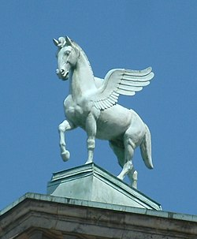
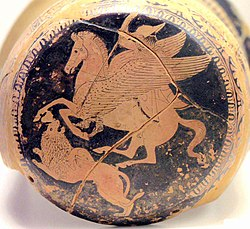

Vol. 1: Mitologia Griega
Pegaso
Pegaso, o Pegasos, es un caballo alado de la mitología griega, cuyo padre era Poseidón y que nació del cuello cortado de la gorgona Medusa, asesinada por Perseo. Al mismo tiempo y de la misma manera, también nació Crisaor.


Poseidón le dio Pegaso a su hijo Belerofonte, que le daría buen uso en su famosa batalla con la Quimera.